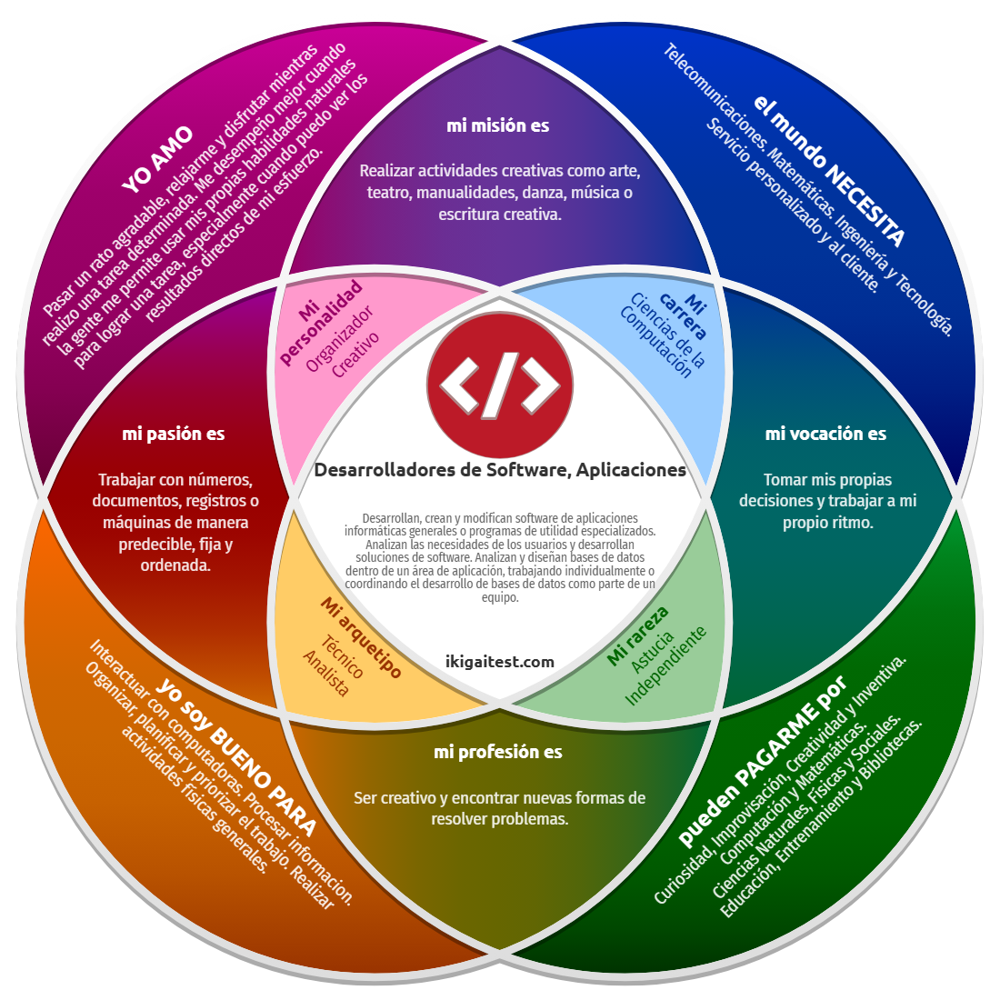

Conecto personas, automatizo procesos y estructuro soluciones tecnológicas con la visión estratégica y rapidez de decisión de un colocador en la cancha de voleibol.
EXPLORA MIS DOS FACETAS EN VIVO: FACETA OFICIAL • TECH LEAD ACTIVA

Líder Tecnológico & Colocador Táctico • EG Global & Chapman
 🏐 Voleibol
🏐 Voleibol
Capitán Campeón
Torneo 2024
 💻 Laboral IT
💻 Laboral IT
Chapman Wilches
Desarrollo & Ops
 👨👩👧 Familia
👨👩👧 Familia
Claudia Villalobos
Pilar de Vida
 🌍 Viajes
🌍 Viajes
Horizontes
Balance Vital
 👶 Orígenes
👶 Orígenes
Primeros Pasos
Vocación Temprana
Comprender quién soy en la cancha y en la consola: pasiones reales, fortalezas contrastadas en test oficial y retos de liderazgo.
 #7 Colocador
#7 Colocador
10+ años de voleibol competitivo. Visión periférica 360°, anticipación de bloqueos y armado de jugadas con cabeza fría.
 Infraestructura
Infraestructura
Desarrollo de software, automatización de procesos repetitivos y gestión integral de servidores en la firma Chapman Wilches.
 Raíces
Raíces
Curiosidad infantil por desarmar y construir. Respaldo familiar que forjó la empatía, la perseverancia y el compromiso de servir.
Resultados Reales ACA • Técnico Analista & Organizador Creativo

Disfrutar resolviendo tareas complejas usando habilidades analíticas naturales para ver resultados directos y tangibles.
Interactuar con computadoras, procesar información, organizar, priorizar flujos de trabajo y actividad física de alto rendimiento.
Ingeniería, tecnología, telecomunicaciones y automatizaciones que reduzcan la fricción en personas y empresas.
Mentalidad de colocador: armar la jugada para que el equipo anote.
Descomposición de problemas complejos en pasos lógicos ejecutables.
Eliminar tareas repetitivas para maximizar eficiencia y trazabilidad.
Arquitectura de servidores y gestión limpia de infraestructura.
Comunicación asertiva con usuarios y equipos multidisciplinarios.
Metas reales en Chapman Wilches y en la CUN: automatización empresarial, repotenciación de servidores y formación continua en IA.
Chapman Wilches • Estación Tecnológica
Infraestructura, Apps y Trazabilidad
Diseñar, programar e implementar 4 soluciones para automatizar procesos manuales con trazabilidad documental completa en Chapman Wilches.
Liderar la actualización de hardware y software de los servidores de la empresa para optimizar tiempos de respuesta y seguridad.
Completar los ciclos propedéuticos (Técnico, Tecnólogo y Profesional) capacitándome activamente en IA para aplicarla en la industria.
4 apps con firma digital y servidores actualizados.
60% menos tiempo en firmas y 99.9% uptime.
Infraestructura propia y stacks web probados.
Impacto directo en productividad y ascenso.
Sprints trimestrales a 6 y 12 meses.
Soluciones de ingeniería aplicadas a necesidades auténticas: el entorno corporativo legal y el bienestar del hogar familiar.
Representante Legal • Chapman Wilches Abogados
Plataforma web segura que digitaliza el 100% de los documentos legales con validez probatoria y tres opciones de firma:
La analogía rectora de mi marca personal: cómo la visión táctica deportiva se transforma en software robusto.
 🏐 EN CANCHA (SETTER)
💻 EN CÓDIGO (INGENIERO)
🏐 EN CANCHA (SETTER)
💻 EN CÓDIGO (INGENIERO)
"Yo, Aldair Enrique Camargo (Kike Junior), sé estructurar, desarrollar y automatizar soluciones tecnológicas, para equipos de desarrollo y organizaciones que buscan eficiencia y orden, con la visión estratégica, agilidad mental y liderazgo colaborativo de un colocador en la cancha de voleibol."
Riesgo de extravío, demoras de días y cero trazabilidad en documentos legales.
Certeza probatoria, no repudio y tranquilidad institucional.
Blindaje de procesos, orden absoluto y estructura inquebrantable.
De la cancha al código: validación de firmas en segundos con certificado digital.
Mensaje de alto impacto profesional y evidencia de autoría con Inteligencia Artificial Institucional.
Ingeniero de Sistemas en Formación • Colocador #7
Pitch Ejecutivo de 60 SegundosGoogle Gemini • Cuenta Institucional CUN
Encuadre visual seguro (Face-Safe): ninguna cabeza cortada. Explora cada dimensión de Kike Junior con navegación completa por categorías.
Fotografía oficial de Marca Personal: Liderazgo Tecnológico, Innovación y Estrategia Deportiva.
Celebración de campeonato con trofeo y medallas: liderazgo bajo presión y lectura táctica.
Precisión milimétrica de colocación: habilitar al atacante en la fracción de segundo perfecta.
La constancia del entrenamiento diario forja la disciplina y la visión analítica.

Comunicación constante y confianza colectiva en plena competición de torneo.
Centro neurálgico de infraestructura tecnológica y optimización de servidores corporativos.
Puesto de trabajo donde se programan las 4 aplicaciones con certificación de firma.
Amor incondicional y la inspiración humana para crear soluciones de bienestar como NutriTrack Home.

Momentos de gratitud compartida que recargan la energía y dan sentido al esfuerzo académico.

El núcleo que acompaña cada meta en la ingeniería y en la vida personal.

Valores de humildad, perseverancia y generosidad aprendidos de generación en generación.
Desconexión en las alturas: viajar amplía la perspectiva estratégica y renueva ideas.

Explorando caminos que exigen paso firme, paciencia y visión de destino.

Aire puro y desafío de nuevas pendientes con energía deportiva intacta.

Disfrutar cada etapa del recorrido con gratitud por los logros alcanzados.

Celebración de metas cumplidas y trazado de los nuevos objetivos SMART anuales.

La curiosidad de un ingeniero trasciende la pantalla hacia la diversidad del mundo.

Espacios de introspección para tomar decisiones con cabeza fría y visión clara.

Equilibrio integral entre la exigencia técnica corporativa y el bienestar vital.

Parar para tomar impulso: descansar y contemplar es parte fundamental del plan de vida.

Aventuras con grandes amistades para coleccionar memorias y reforzar la camaradería.

Mirar el camino recorrido desde la cumbre para recordar por qué elegimos avanzar.

El silencio de los paisajes naturales despeja y clarifica los problemas más complejos.
Donde nació la espontaneidad, la alegría y la motivación por explorar el entorno.

Primeros juguetes e ingenio infantil que anunciaban la vocación por la ingeniería.
Desde pequeño, la energía física y el deporte marcaron el ritmo de cada día.

El amor hogareño que sembró la empatía, el respeto y el espíritu colaborativo.

La mirada viva y risueña que hoy conserva Kike Junior frente a cada desafío técnico.

Honrar de dónde venimos es el cimiento de una marca personal auténtica y humilde.
Los tres ciclos propedéuticos que consolidan a Kike Junior como Ingeniero de Sistemas en la CUN.
Soporte, redes, cableado estructurado y fundamentos lógicos de programación.
Desarrollo de software, automatización, bases de datos y trazabilidad en Chapman Wilches.
Liderazgo tecnológico, arquitectura en la nube, gestión ética de IA y dirección de proyectos.
Aldair Enrique Camargo Villalobos • Kike Junior